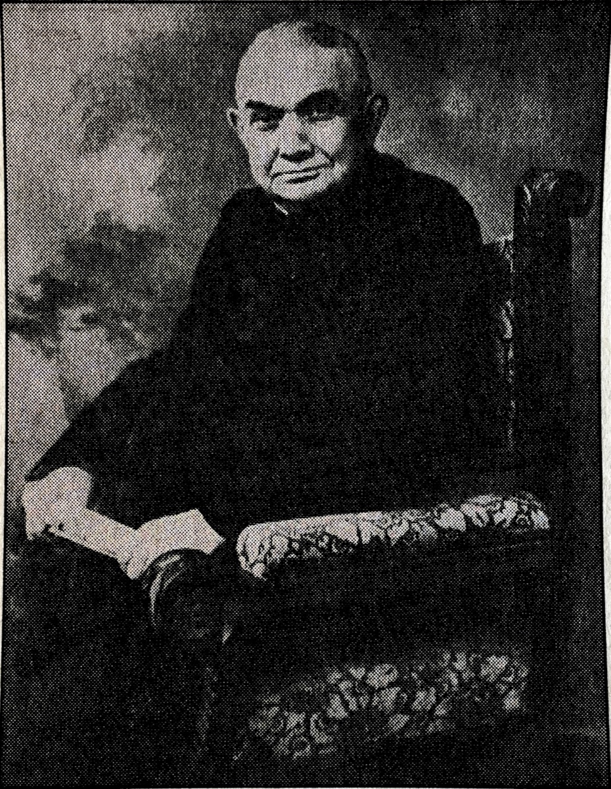
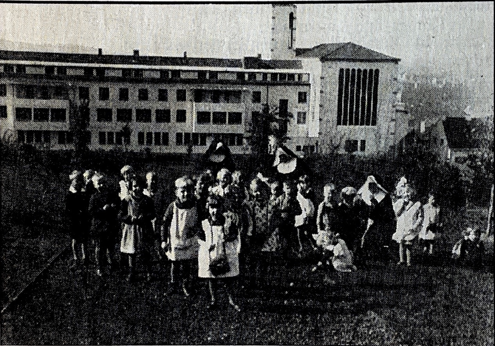
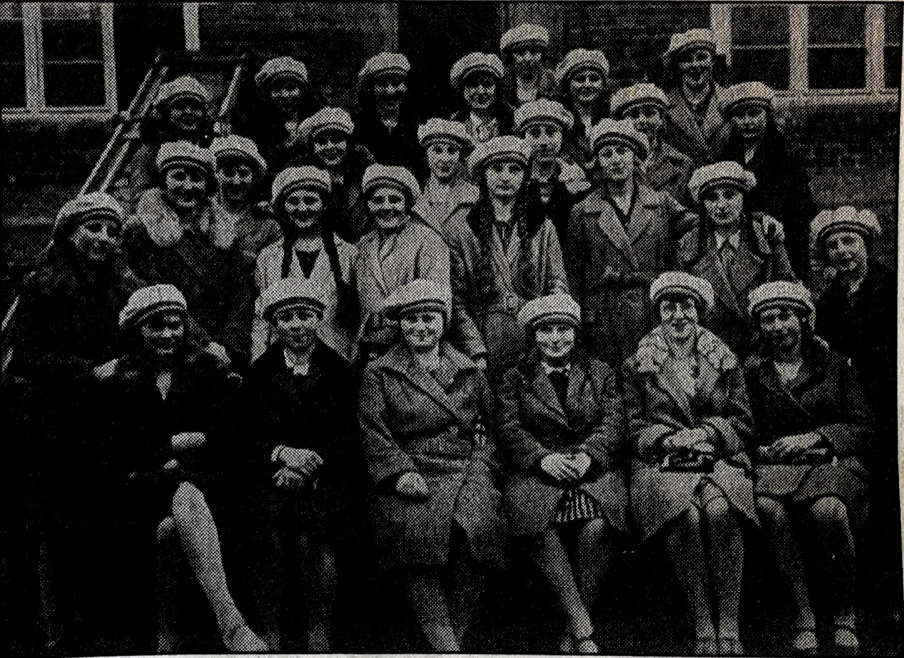
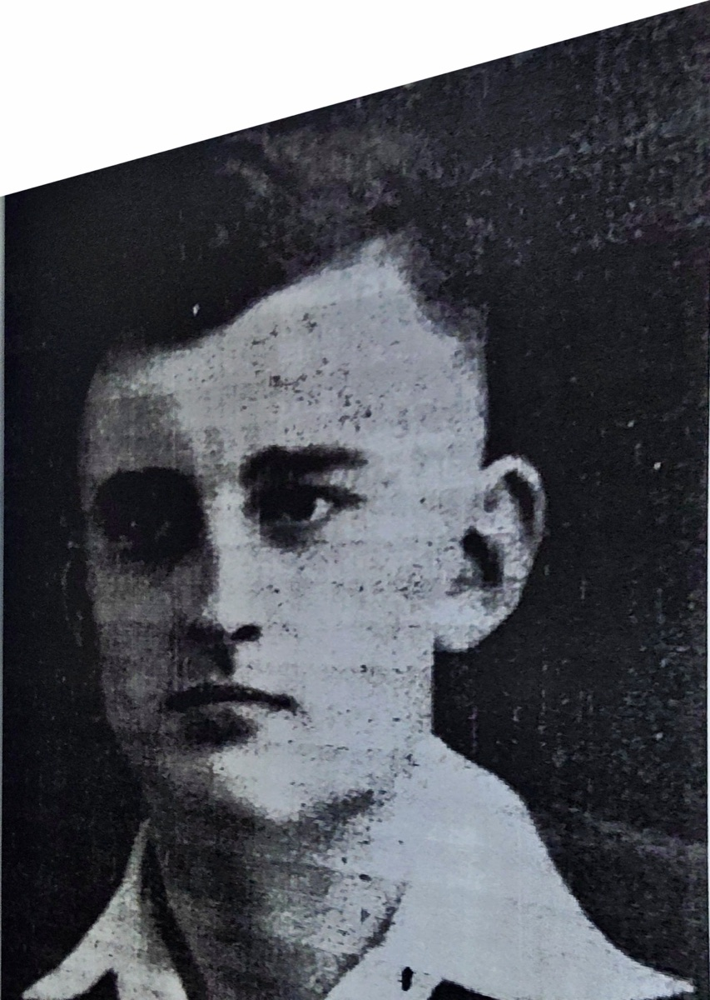
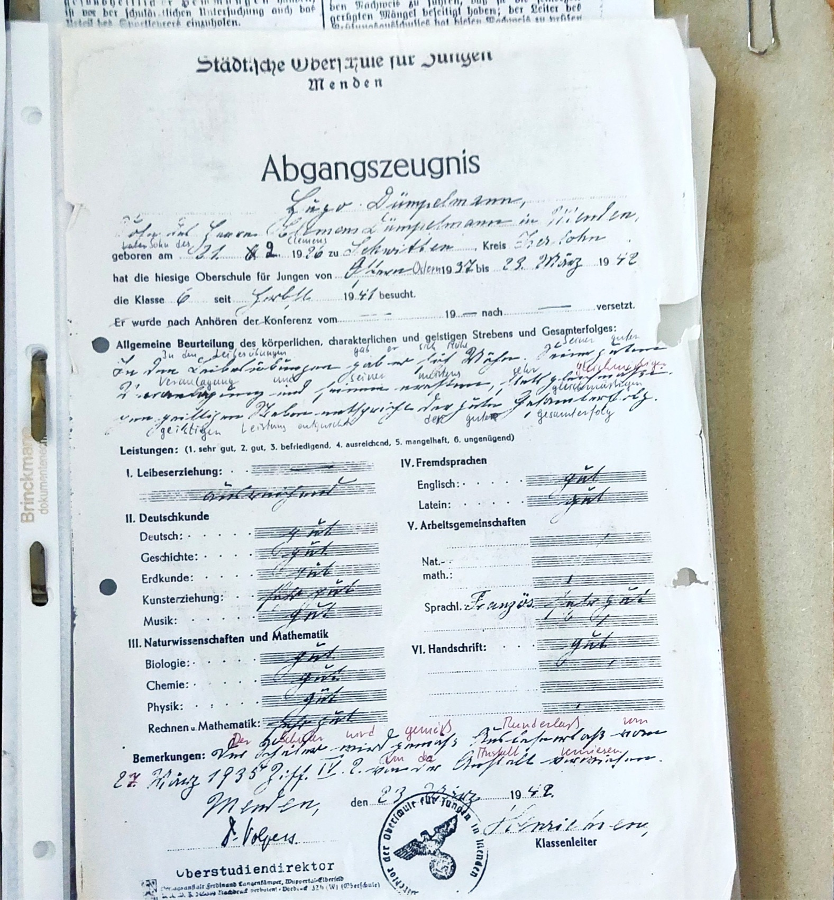
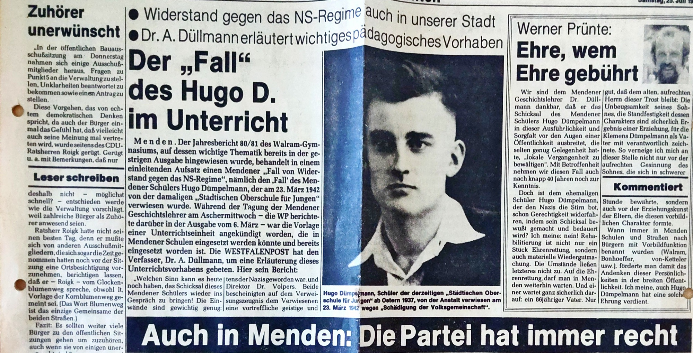

Geheimnisse des WBG
Walburgisgymnasium · Walburgisrealschule
Geheimnisse des WBG
Walburgisgymnasium · Walburgisrealschule
Geheimnisse des WBG
Walburgisgymnasium · Walburgisrealschule
Geheimnisse des WBG
Walburgisgymnasium · Walburgisrealschule
Auch die Geschichte unserer Schule hat dunkle Kapitel. Auf dieser Seite dokumentieren wir, was zwischen 1933 und 1945 am WBG geschah — mit einem Comic, Texten und Fotografien. Wir erzählen sie, damit sie nicht vergessen wird.
Quelle: eine Chronik von Reinhold Schrieck vom 11. Juni 1994 aus dem „Wochen Anzeiger der Mendener Zeitung“.
Mit dem diesjährigen 750-jährigen Jubiläum der Stadt Menden war der Startschuss mit unserem Projekt der Aufarbeitung unserer Schule gesetzt. Der Wunsch nach einem katholischen Lyzeum in Menden wurde bereits schon um die Jahrhundertwende geäußert von der St. Vincenz Gemeinde. Damals versuchte man nämlich eine Ordensgemeinschaft als Trägerin für die Schule zu finden. Denn die evangelische Kirchengemeinde hatte bereits die „Evangelische höhere Töchterschule“, wodurch die katholischen Mädchen weiterführende Schulen in anderen Städten besucht haben. Als die Idee der preußischen Regierung vorgestellt wurde, schenkten die der Idee kein Interesse. Dechant Boeddicker, ein Pfarrer der St. Vincenz Gemeinde, hat sich für die Mädchenschule eingesetzt. Im Frühjahr 1918 fand der Boeddicker die Heiligenstädter Schulschwestern, die ab sofort als Ordensgemeinschaft dienten. Jedoch sprach sich die Abteilung des Regierungspräsidenten in Arnsberg zunächst gegen die Schule aus, überwand sich jedoch und genehmigte die Schule im November 1918.

Zu Beginn hatte die Schule keine Unterkunft für die Schwestern und kein Schulgebäude, wo die Schüler unterrichtet werden können. Die Schwestern haben ihre ersten Jahre in der Balver Straße 21 bei „Spiekermanns obendrauf“ gelebt. Die Schüler wurden zunächst in der Augustaschule am Kirchplatz unterrichtet. Eingeweiht wurde das Schulgebäude am 21. April 1919. Der damalige städtische Realschulleiter, Dr. Wolfschläger, äußerte sich mit dem Zitat „Das Brüderchen hat ein Schwesterchen bekommen“ zu der neueröffneten Schule. Nachdem Deutschland Elsaß-Lothringen verlor, kamen viele Schwestern aus Metz nach Menden im Jahr 1919. Unter anderem auch die Schwester Paula Hammer, welche die Leitung der jungen Schule übernommen hat. Zudem wurde auch die Mädchenschule in das bereits bestehende Lyzeum integriert.

Als die Zeit des NS-Regimes begonnen hat, passte die Schule nicht mehr in das Bild der NS-Erziehung, wodurch 1938 ein Ratsbeschluss erfolgte, welcher das damalige Ende der Schule besiegelte. Die Maria-Martha-Schule zog in die freien Räume der Walburgisschule ein, was zur Folge hat, dass es in Menden nur noch eine weiterführende Mädchenschule gab.
Die Vorstellung, eine NS-Heimschule in der Walburgisschule für Hitlerjungen hier zu errichten, wurde glücklicherweise durch die Errichtung des Lazaretts im Jahr 1939 durchkreuzt. Durch die Errichtung des Lazaretts waren zu wenig Räume für die NS-Heimschule frei. In den letzten Kriegsmonaten fand kein Unterricht mehr statt, auch unter der Besetzung der Amerikaner und Engländer.

Nach der Neueröffnung der Schule war es kein Lyzeum mehr, sondern bereits ein Gymnasium, womit auch evangelische Schülerinnen zugelassen waren. Jedoch herrschten durch die hohen Schülerzahlen beengte Verhältnisse, wobei die Aula auch als Turnhalle diente. Die meisten Schüler verzeichnete die Schule im Jahr 1982 mit 1216 Schülern. Aufgrund dessen wurden unter der Schulleiterin Schwester Maria Eduarda Kempf weitere bauliche Maßnahmen geplant. Zudem finanzierte die Stadt die Umbauten und fortlaufenden Kosten der Schule mit.
Text: C. A. Palhinhas Neves
Blättert Panel für Panel durch die gezeichnete Geschichte.
Sketch von: D. Stalinski, L. Schulte, L. Schippritt · Quelle: Bericht von Klemens Dümpelmann

Hugo Dümpelmann wurde am 21. Februar 1926 in Schwitten geboren. Er war der Sohn des Graveurmeisters Klemens Dümpelmann und seiner Frau Josefa Dümpelmann (geb. Filthaut). Gemeinsam mit seinen vier Geschwistern und einem Pflegekind wuchs er zunächst in der Friedrichstraße 10 auf. Nach der Machtübernahme der Nationalsozialisten zog die Familie in die Werlerstraße 89 um.
Seine schulische Laufbahn begann an der Schwitter Dorfschule. Im Jahr 1937 wechselte er in die Quinta der Oberschule für Jungen, dem heutigen Walramgymnasium. Bereits während seiner Schulzeit fiel Dümpelmann durch seine außergewöhnlichen Fähigkeiten auf.
Beschrieben wird er als ein außergewöhnlich begabter und zugleich bescheidener Schüler. In einem Bericht seines Vaters aus dem Jahr 1981 heißt es, Hugo habe „die uneingeschränkte Bewunderung der Mitschüler“ erlangt. Seine Mitschüler schätzten ihn nicht nur wegen seiner Intelligenz, sondern vor allem, weil er anderen bereitwillig half und seine Überlegenheit niemals zur Schau stellte. Diese Eigenschaften machten ihn zu einer angesehenen Persönlichkeit innerhalb der Schulgemeinschaft. Sein Abschlusszeugnis weist einen Notendurchschnitt von 1,9 aus und unterstreicht damit seine hervorragenden Leistungen.

Mit der Machtübernahme der Nationalsozialisten wurden kirchliche Jugendverbände zunehmend eingeschränkt. 1937 verbot das NS-Regime sämtliche Jugendgruppen, da Jugendliche ausschließlich in nationalsozialistischen Organisationen wie der Hitlerjugend (HJ) erzogen werden sollten. Dennoch bestand eine Untergruppe der katholischen Jugendorganisation Neudeutschland (ND) im Hintergrund weiter.
Im Jahr 1941 übernahm der erst 15-jährige Hugo Dümpelmann die Leitung der Mendener ND-Gruppe. Die Jugendlichen trafen sich heimlich im sogenannten „versteckten Meditationsraum“ über der Aula unserer Schule. Aus ihrer christlichen Überzeugung heraus lehnten sie die Ideologie des Nationalsozialismus ab und verbreiteten vereinzelt regimekritische Flugblätter und Parolen.
Die Mitglieder der ND orientierten sich an christlichen Grundwerten wie der Würde jedes Menschen, Nächstenliebe, Wahrhaftigkeit, Verantwortung und Gewissensfreiheit. Ihr Ziel war es, ihren Glauben auch unter den Bedingungen der nationalsozialistischen Diktatur zu bewahren und sich einer Ideologie zu widersetzen, die Menschen aufgrund ihrer Herkunft oder ihres Glaubens ausgrenzte und verfolgte. Der Widerstand der Gruppe war daher nicht militärischer, sondern religiös und ethisch motivierter Widerstand.
Obwohl Hugo Dümpelmann dem Nationalsozialismus kritisch gegenüberstand, wurde er aufgrund seiner Beliebtheit, seiner hervorragenden schulischen Leistungen sowie seiner Hilfsbereitschaft von der Hitlerjugend dazu gedrängt, die Funktion eines Fähnleinführers im Deutschen Jungvolk in Bösperde zu übernehmen.
Ein erster offener Konflikt mit der Hitlerjugend ereignete sich am 20. April 1941. Anlässlich einer Theateraufführung zum Geburtstag Adolf Hitlers blieb Dümpelmann der Veranstaltung aufgrund von Krankheit fern. Als ein HJ-Führer ihn zu Hause aufsuchen wollte, kam es im Treppenhaus zu einer Auseinandersetzung, bei der Hugos Vater den Eindringling die Treppe hinunterstieß.
Ein bedeutendes Zeichen des katholischen Widerstands setzte die ND am 18. Oktober 1941 während der Weihe des neuen Paderborner Bischofs. Rund 5.000 Jugendliche erschienen in einheitlicher Kluft und demonstrierten damit öffentlich für das Weiterleben der verbotenen katholischen Jugendbewegung. Die nationalsozialistischen Behörden reagierten umgehend: Die Gestapo leitete Fahndungen gegen die Gruppe ein, zahlreiche Mitglieder wurden festgenommen und in das Dortmunder Gestapo-Gefängnis „Steinwache“ gebracht.
Auch in Menden überwachte eine sogenannte „Streifenwache“ der Hitlerjugend die Aktivitäten der katholischen Jugendgruppe. Als Leiter der ND-Gruppe geriet Hugo Dümpelmann besonders in den Fokus der Gestapo. Wenig später wurde er zu einem Verhör vorgeladen. Trotz seiner ausgezeichneten schulischen Leistungen wurde er anschließend vom Schulbesuch ausgeschlossen.
Die Gestapo untersagte ihm, über den Inhalt des Verhörs zu sprechen oder weitere Treffen der Jugendgruppe zu organisieren. Bei Nichteinhaltung drohten Verhaftung und weitere strafrechtliche Maßnahmen. Während der Verhöre versuchten die Beamten außerdem durch körperliche Gewalt, die Namen weiterer Gruppenmitglieder zu erfahren. Der zentrale Vorwurf lautete „Verrat am Staat und an der Volksgemeinschaft“.
Von den Nationalsozialisten wurde Hugo Dümpelmann schließlich als „Volksschädling“ eingestuft. Dadurch wurden ihm sowohl eine Berufsausbildung als auch die Aufnahme einer regulären Arbeit verwehrt.

Der Fall Stalingrads am 31.01.1943 forderte die Mobilisierung aller Kräfte. Auch Dümpelmann wurde als wehrwürdig eingestuft. Gleichzeitig erhielt er die Möglichkeit, durch das Ablegen einer Prüfung an seine Schule zurückzukehren. Kurz nach seiner Wiederaufnahme wurde er jedoch als Luftwaffenhelfer nach Hagen eingezogen.
Noch vor Kriegsende folgte der reguläre Wehrdienst an der Westfront. Bei Eltville am Rhein geriet Dümpelmann in französische Kriegsgefangenschaft. Die schlechten Haftbedingungen und die anhaltende Unterernährung führten zu einer Tuberkuloseerkrankung. Ende 1945 musste er in das Lazarett in Göppingen eingeliefert werden. Dort starb er am 15. Februar 1946, nur wenige Tage vor seinem 20. Geburtstag, an den Folgen seiner Krankheit.
Text: L. Kraus
Quellen: Bericht von Klemens Dümpelmann (19.03.1981), Wochen Anzeiger der Mendener Zeitung vom 11. Juni 1994, Westfalenpost (Mendener Nachrichten) vom 25. Juli 1981.